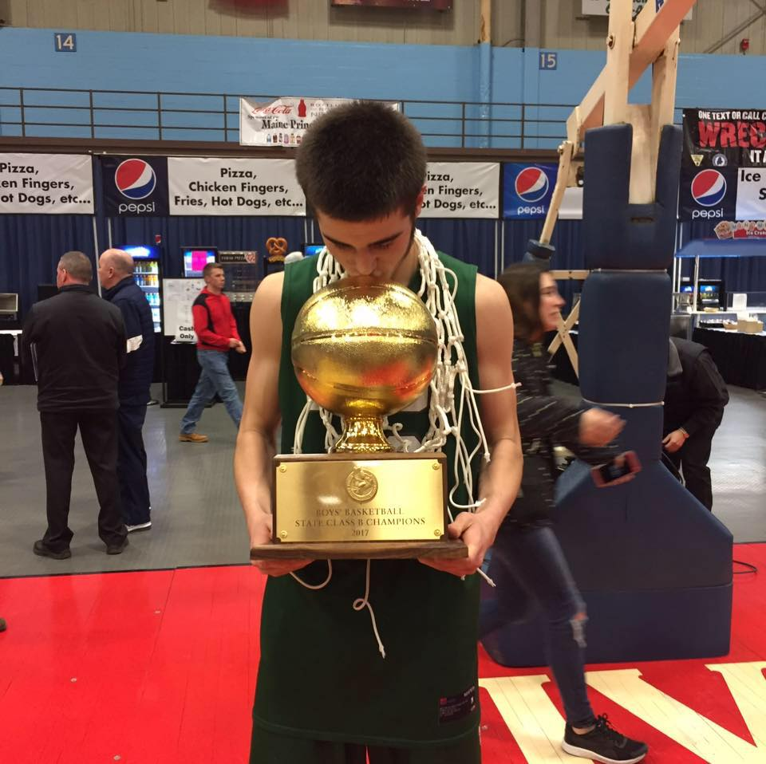
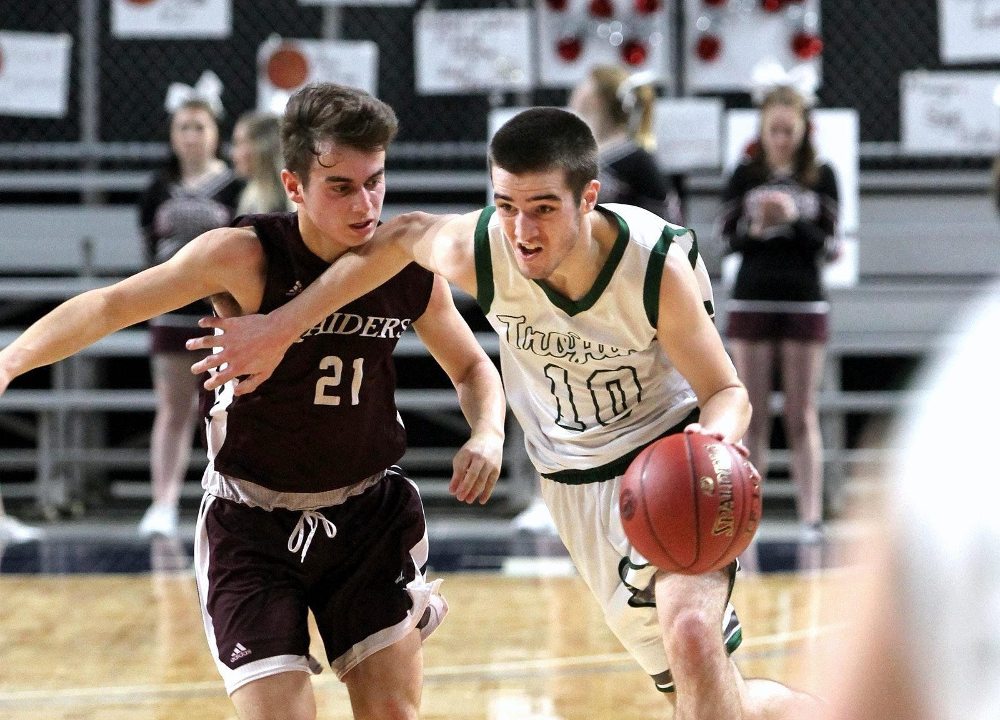

My first few memories of life consist of gymnasiums and sports fields. My father was a coach for many different sports teams within my community. Whether it was jv baseball, or sixth grade soccer, he was there coaching. All of my siblings were also extremely athletic. So I have a very rich history of athletics.
 I played football basketball and baseball for most of my life at competive levels. However I only continued playing Basketball and Football in high school. I was a four year varsity athlete for both sports. I was a three year starter at both QB and PG for each sport.